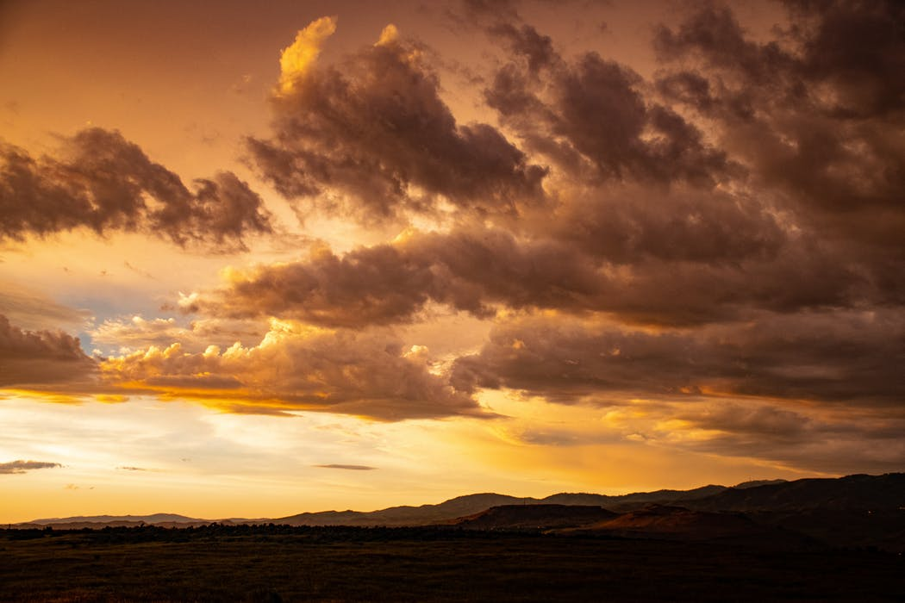

"Would you like to sign up for our newsletter?"
XNational Parks FAQ
Parks List
National Parks
Acadia, Maine
- Wabanaki ancestral grounds
- Park includes mountains, ocean shoreline, woodlands and lakes.
- Park has over 40 different species of mammalian wildlife.
- Home to the cougar and gray woldf.
Bryce Canyon, Utah
- Park is not a canyon because it was not formed by erosion.
- Paiute Indians ancestral grounds.
- USS Bryce Canyon named after the park.
- Park boasts more than 400 native plant species.
Crater Lake, Oregon
- Park is the fifth-oldes national park in the US.
- Park's lake is the deepest lake in the US, being 1,949 feet at its deepest point.
- Crater formed after the collapse of Mount Mazama.
- Park has multiple hiking trails
Would you like to register?
- 1. How do I obtain a park entrance pass?
- You can obtain park entrance passes by visiting a park site that charges an entrance fee. Entrance fee sites have passes available; we recommend calling a park prior to your visit. (See the park search to locate a specific park.) There are a number of entrance passes available, including park-specific passes as well as passes that offer entrance to more than 2,000 federal recreation sites in addition to the national parks (Annual, Military, Senior, 4th Grade, Access, and Volunteer passes).
- 2. Where can I find a park map?
- You can view maps on specific park websites or download maps from the Harpers Ferry Center map collection.
- 3. How do I make reservations for camping/lodging in national parks?
- For campground reservations, visit Recreation.gov. Not all parks participate in this service; many campgrounds are first come, first served. For more information on specific camping and lodging services offered at the park(s) of your interest, please check specific park websites. You can also learn more about camping in national parks and find a map of parks with camping opportunities.
- 4. How do I reserve a tour in a park?
- You can book some park tours through Recreation.gov such as WWII Valor in the Pacific (Pearl Harbor), many Mammoth Cave National Park cave tours, Independence National Historical Park tours, and more. Not all parks participate in this reservation service. For more information on tours offered at a specific park, please see the park search.
- 5. Can I bring my pet to a national park?
- Some national parks welcome pets—in developed areas, on many trails and campgrounds, and in some lodging facilities. Learn more about pets in parks.
- 6. What do I need to know about driving off road in national parks?
- Before you head out, check with the national parks that you intend to visit. In many national parks, off-road driving is illegal. Where off-road driving is allowed, the National Park Service regulates it.
- 7. How do I make reservations for camping/lodging in national parks?
- For campground reservations, visit Recreation.gov. Not all parks participate in this service; many campgrounds are first come, first served. For more information on specific camping and lodging services offered at the park(s) of your interest, please check specific park websites. You can also learn more about camping in national parks and find a map of parks with camping opportunities.
- 8. How many people visit the national parks?
- Total recreation visitors to the national parks in 2017: 330,882,751
- 9. How do I find out about contracting opportunities?
- Opportunities to contract with the National Park Service are posted to FedBizOpps.gov, the federal government’s electronic business portal
- 10 How do I apply for a job with the National Park Service?
- National Park Service jobs, including both permanent and seasonal positions, are listed on USAJOBs. Learn more about working for us, including opportunities for students and volunteers and tips for applying for jobs.
